FILTER ↓
GIS Site Analysis (April 2026)


The objective of this project was to identify an ideal location for a new branch of a recreational outdoor equipment company in Vancouver, B.C. from among potential sites. The site was chosen after an analysis in ArcGIS using data such as census data, street networks, transit stops, and land use classifications, among others.
Weather Site (November - December 2025)
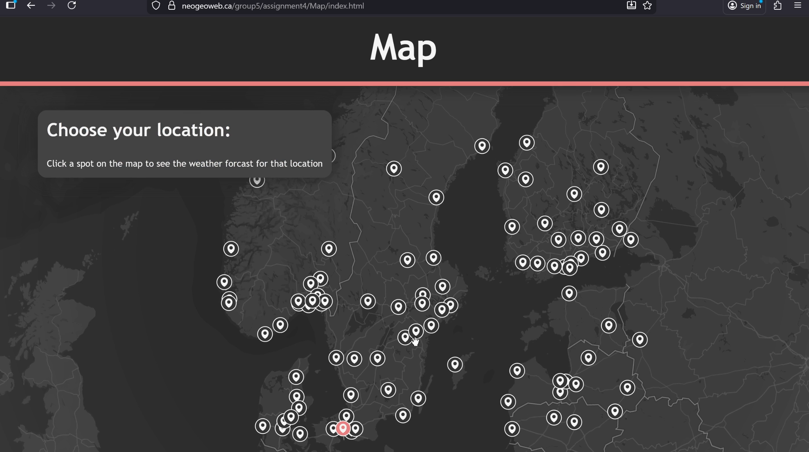
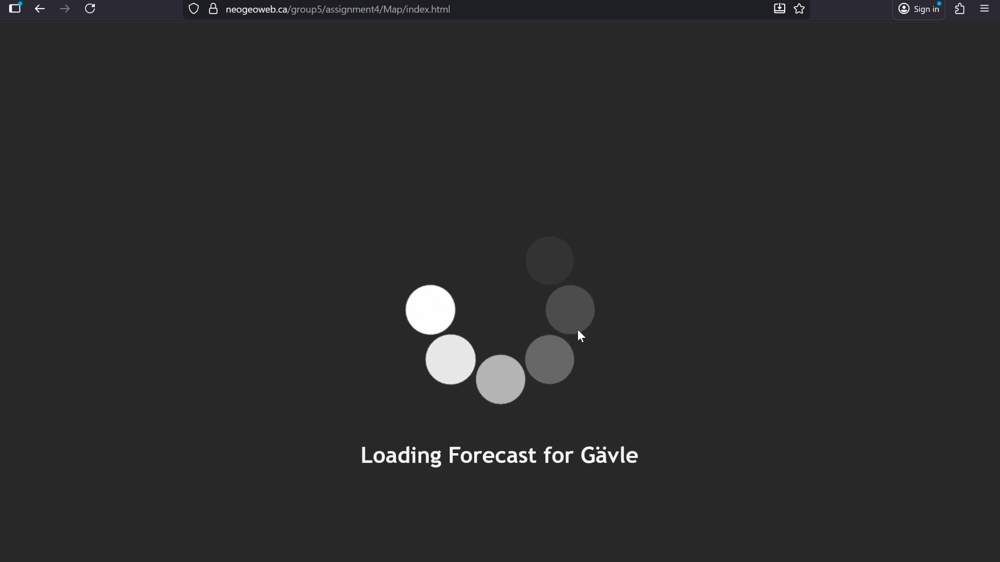
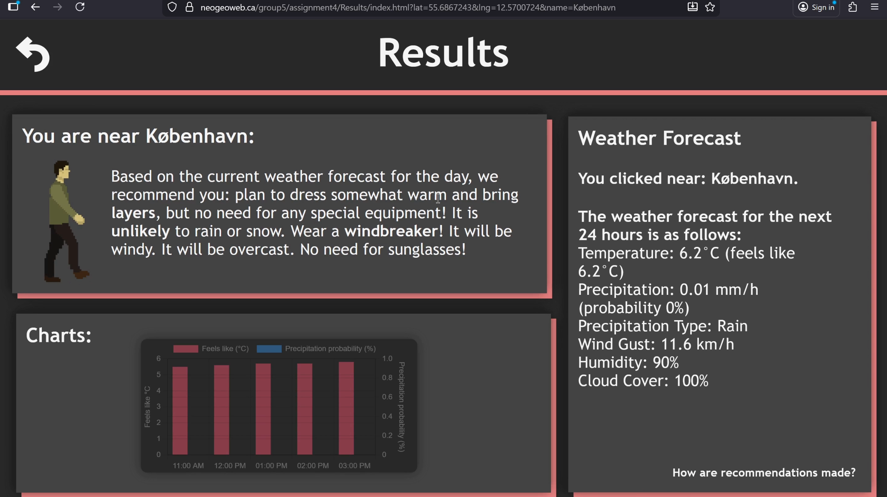
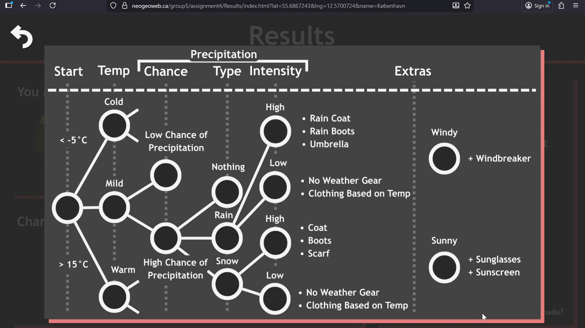
This website was made for the class "Princinples of the Geospatial Web" (GEOG 384). The assignment was to make a site that will recommend what to wear based on the current weather. It was done in a group with three other people. This project involved using the tomorrow weather API, getting the coordinates from a point on the map and then passing it into the API to get the results. We also had to store the results in local storage so that it would remember where you were.
Tracker App (October - November 2025)
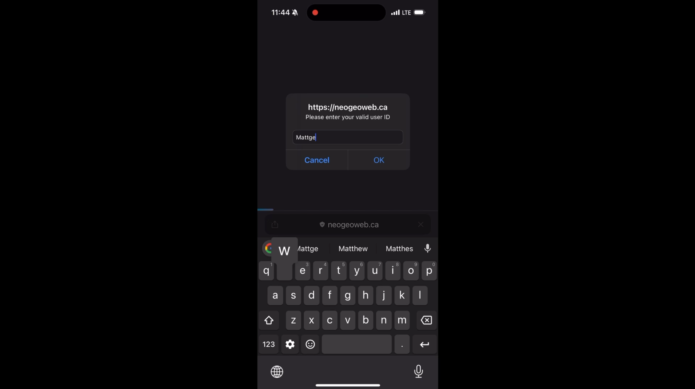
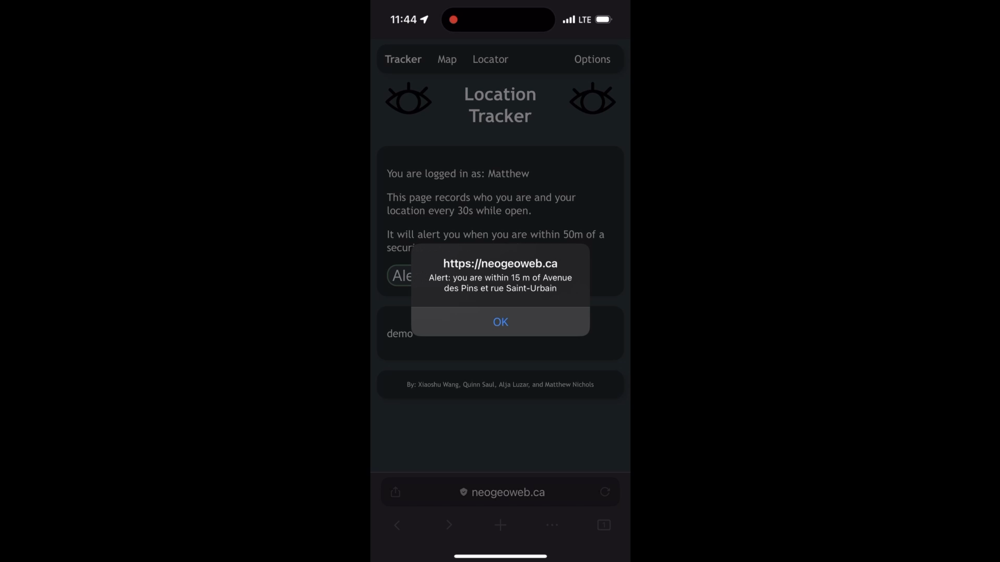
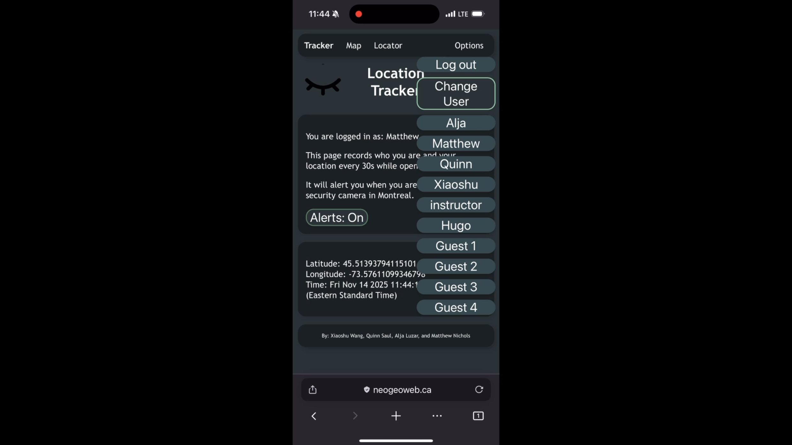
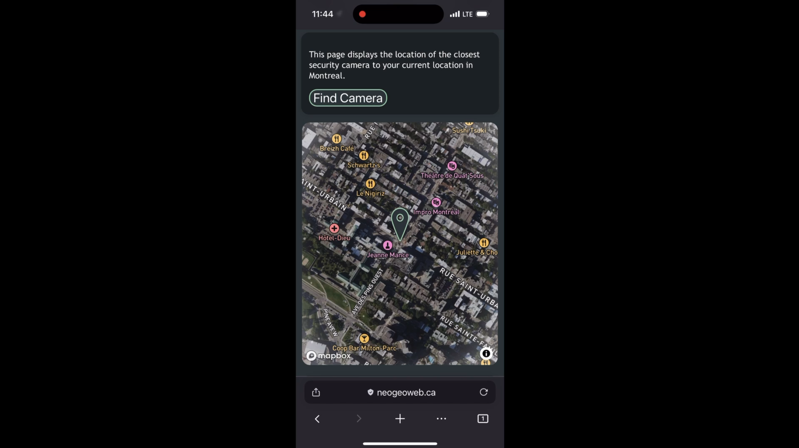
This website was made for the class "Princinples of the Geospatial Web" (GEOG 384). The assignment was to make an app that tracked your location every 30 seconds. It would then send you a notification if you were within a certain range of some object. Four our project, we chose security cameras in Montreal. Finally, you could also use the app to veiw the paths of the different users, as well as find the closest security camera to your location. The project was done in a group with three other people. Some challanges of this project were using many of the built in web features such as current location, managing parity between browsers, and setting up a login system.
Restaurant Locator (October 2025)
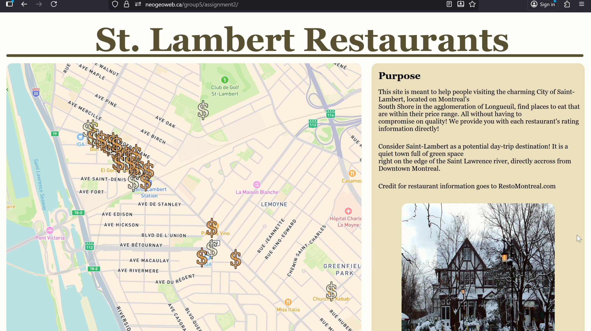
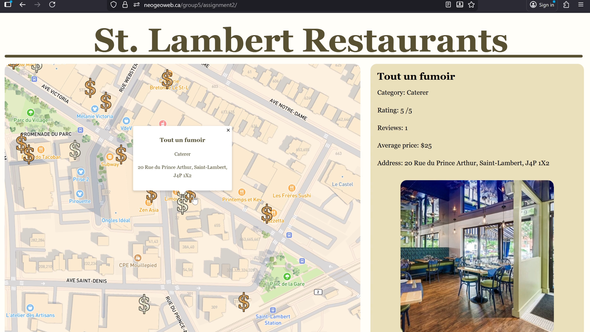
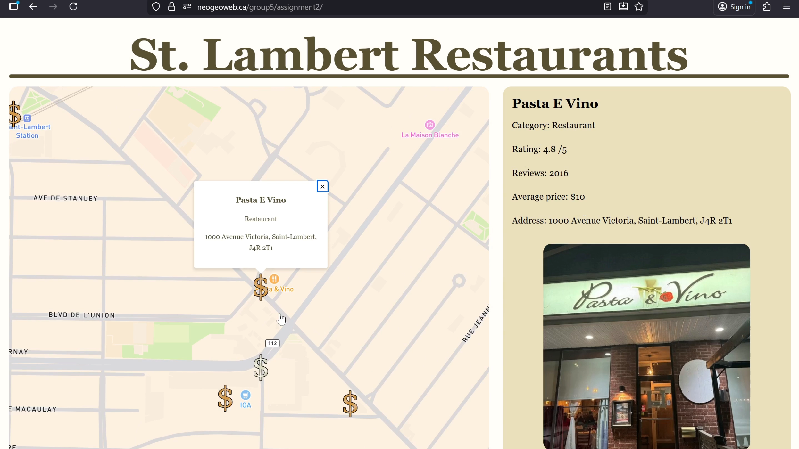
This website was made for the class "Princinples of the Geospatial Web" (GEOG 384). The assignment was to make a website displaying data from resomontreal.com on a map. It was done in a group with three other people. This project consisted of scraping data from restomontreal using Xpath and then formatting that data such that it could be put onto a mapbox map.
Montreal Metro Storymap (September 2025)
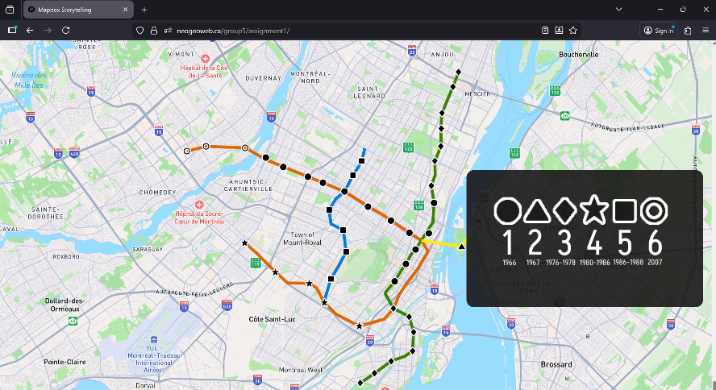
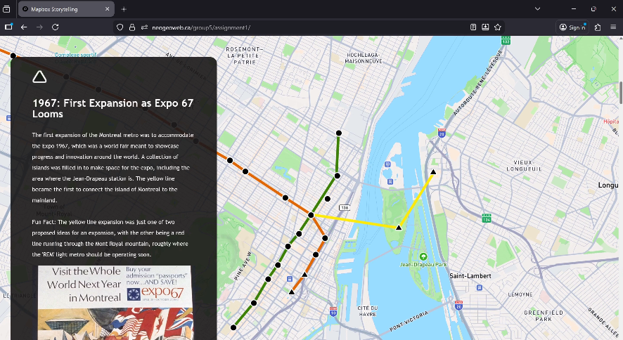
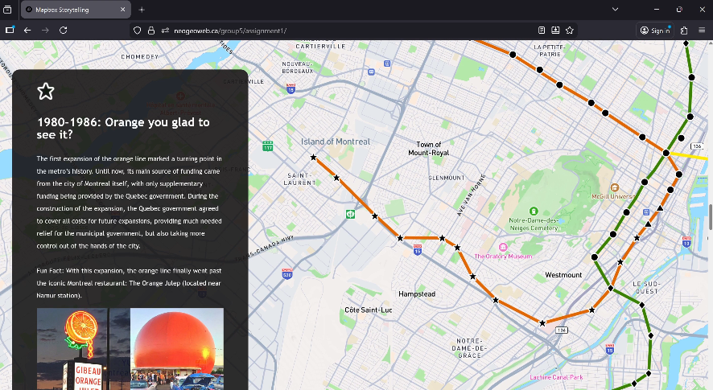
This storymap was made for the class "Princinples of the Geospatial Web" (GEOG 384). The assignment was to make a storymap using mapbox. It was done in a group with three other people. My contribution was setting up the website, getting scrolling and transitions working, writing the text boxes, setting up the images and videos, and generally doing much of the graphic design of the website.